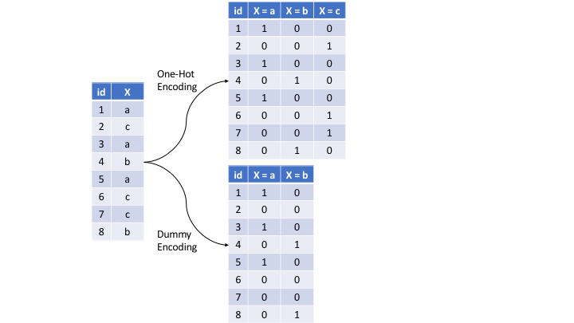

MATH 427: Preprocessing, Missing Data, and Resampling Continued
Eric Friedlander
Announcements
- Coyote Connections Thu March 13th 7-9pm
- Please print out and bring four copies of your resume and cover letter to class on Friday
- Debrief from talk today
Computational Set-Up
Pre-processing
Data: Different Ames Housing Prices
Goal: Predict Sale_Price.
Rows: 881
Columns: 20
$ Sale_Price <int> 244000, 213500, 185000, 394432, 190000, 149000, 149900, …
$ Gr_Liv_Area <int> 2110, 1338, 1187, 1856, 1844, NA, NA, 1069, 1940, 1544, …
$ Garage_Type <fct> Attchd, Attchd, Attchd, Attchd, Attchd, Attchd, Attchd, …
$ Garage_Cars <dbl> 2, 2, 2, 3, 2, 2, 2, 2, 3, 3, 2, 3, 3, 2, 2, 2, 3, 2, 2,…
$ Garage_Area <dbl> 522, 582, 420, 834, 546, 480, 500, 440, 606, 868, 532, 7…
$ Street <fct> Pave, Pave, Pave, Pave, Pave, Pave, Pave, Pave, Pave, Pa…
$ Utilities <fct> AllPub, AllPub, AllPub, AllPub, AllPub, AllPub, AllPub, …
$ Pool_Area <int> 0, 0, 0, 0, 0, 0, 0, 0, 0, 0, 0, 0, 0, 0, 0, 0, 0, 0, 0,…
$ Neighborhood <fct> North_Ames, Stone_Brook, Gilbert, Stone_Brook, Northwest…
$ Screen_Porch <int> 0, 0, 0, 0, 0, 0, 0, 165, 0, 0, 0, 0, 0, 0, 0, 0, 0, 0, …
$ Overall_Qual <fct> Good, Very_Good, Above_Average, Excellent, Above_Average…
$ Lot_Area <int> 11160, 4920, 7980, 11394, 11751, 11241, 12537, 4043, 101…
$ Lot_Frontage <dbl> 93, 41, 0, 88, 105, 0, 0, 53, 83, 94, 95, 90, 105, 61, 6…
$ MS_SubClass <fct> One_Story_1946_and_Newer_All_Styles, One_Story_PUD_1946_…
$ Misc_Val <int> 0, 0, 500, 0, 0, 700, 0, 0, 0, 0, 0, 0, 0, 0, 0, 0, 0, 0…
$ Open_Porch_SF <int> 0, 0, 21, 0, 122, 0, 0, 55, 95, 35, 70, 74, 130, 82, 48,…
$ TotRms_AbvGrd <int> 8, 6, 6, 8, 7, 5, 6, 4, 8, 7, 7, 7, 7, 6, 7, 7, 10, 7, 7…
$ First_Flr_SF <int> 2110, 1338, 1187, 1856, 1844, 1004, 1078, 1069, 1940, 15…
$ Second_Flr_SF <int> 0, 0, 0, 0, 0, 0, 0, 0, 0, 0, 0, 0, 563, 0, 886, 656, 11…
$ Year_Built <int> 1968, 2001, 1992, 2010, 1977, 1970, 1971, 1977, 2009, 20…Today
Well cover some common pre-processing tasks:
- Dealing with zero-variance (zv) and/or near-zero variance (nzv) variables
- Imputing missing entries
- Label encoding ordinal categorical variables
- Standardizing (centering and scaling) numeric predictors
- Lumping predictors
- One-hot/dummy encoding categorical predictor
Pre-Split Cleaning
- Before you split your data: make sure data is in correct format
- This may mean different things for different data sets
- Common examples:
- Fixing names of columns
- Ensure all variable types are correct
- Ensure all factor levels are correct and in order (if applicable)
- Remove any variables that are not important (or harmful) to your analysis
- Ensure missing values are coded as such (i.e. as
NAinstead of 0 or -1 or “missing”) - Filling in missing values where you know what the answer should be (i.e. if a missing value really means 0 instead of missing)
Example: Factor Levels in Wrong Order
Re-Factoring
ames <- ames |>
mutate(Overall_Qual = factor(Overall_Qual, levels = c("Very_Poor", "Poor",
"Fair", "Below_Average",
"Average", "Above_Average",
"Good", "Very_Good",
"Excellent", "Very_Excellent")))
ames |> pull(Overall_Qual) |> levels() [1] "Very_Poor" "Poor" "Fair" "Below_Average"
[5] "Average" "Above_Average" "Good" "Very_Good"
[9] "Excellent" "Very_Excellent"Zero-Variance (zv) and/or Near-Zero Variance (nzv) Variables
Heuristic for detecting near-zero variance features is:
- The fraction of unique values over the sample size is low (say ≤ 10%).
- The ratio of the frequency of the most prevalent value to the frequency of the second most prevalent value is large (say ≥ 20%).
| freqRatio | percentUnique | zeroVar | nzv | |
|---|---|---|---|---|
| Sale_Price | 1.000000 | 55.7321226 | FALSE | FALSE |
| Gr_Liv_Area | 1.333333 | 62.9965948 | FALSE | FALSE |
| Garage_Type | 2.196581 | 0.6810443 | FALSE | FALSE |
| Garage_Cars | 1.970213 | 0.5675369 | FALSE | FALSE |
| Garage_Area | 2.250000 | 38.0249716 | FALSE | FALSE |
| Street | 219.250000 | 0.2270148 | FALSE | TRUE |
| Utilities | 880.000000 | 0.2270148 | FALSE | TRUE |
| Pool_Area | 876.000000 | 0.6810443 | FALSE | TRUE |
| Neighborhood | 1.476744 | 2.9511918 | FALSE | FALSE |
| Screen_Porch | 199.750000 | 6.6969353 | FALSE | TRUE |
| Overall_Qual | 1.119816 | 1.1350738 | FALSE | FALSE |
| Lot_Area | 1.071429 | 79.7956867 | FALSE | FALSE |
| Lot_Frontage | 1.617021 | 11.5777526 | FALSE | FALSE |
| MS_SubClass | 1.959064 | 1.7026107 | FALSE | FALSE |
| Misc_Val | 141.833333 | 1.9296254 | FALSE | TRUE |
| Open_Porch_SF | 23.176471 | 19.2962543 | FALSE | FALSE |
| TotRms_AbvGrd | 1.311225 | 1.2485812 | FALSE | FALSE |
| First_Flr_SF | 1.777778 | 63.7911464 | FALSE | FALSE |
| Second_Flr_SF | 64.250000 | 31.3280363 | FALSE | FALSE |
| Year_Built | 1.125000 | 12.0317821 | FALSE | FALSE |
Recipe: Near-Zero Variance
Missing Data
- Many times, you can’t just drop missing data
- Even if you can, dropping missing values can generate biased data/models
- Sometimes missing data gives you more information
- Types of missing data:
- Missing completely at random (MCAR): there is no pattern to your missing values
- Missing at random (MAR): missing values are dependent on other values in the data set
- Missing not at random (MNAR): missing values are dependent on the value that is missing
- Structured missingness (SM): when the missingness of certain values are depends on one another, regardless of whether the missing values are MCAR, MAR, or MNAR
MCAR: Examples
- Sensor data: occasionally sensors break so you’re missing data randomly
- Survey data: sometimes people just randomly skip questions
- Survey data: customers are randomly given 5 questions from a bank of 100 questions
MAR: Examples
- Men are less likely to respond to surveys about depression
- Medical study: patients who miss follow-up appointments are more likely to be young
- Survey responses: ESL respondents may be more likely to skip certain questions that are difficult to interpret (only MAR if you know they are ESL)
- Measure of student performance: students who score lower are more likely to skip questions
MNAR: Examples
- Survey on income: respondent may be less likely to report their income if they are poor
- Survey about political beliefs: respondent may be more likely to skip questions when their answer is perceived as undesirable
- Customer satisfaction: only customers who feel strongly respond
- Medical study: patients refuse to report unhealthy habits
Structurally Missing: Examples
- Health survey: all questions related to pregnancy are left blank by males
- Bank data set: combination of home, auto, and credit cards… not all customer have all three so have missing data in certain portions
- Survey: many respondents by stop the survey early so all questions after a certain point are missing
- Netflix: customers may only watch similar movies and TV shows
Remedies for Missing Data
- Lot of complicated ways that you can read about
- Can drop column of too much of the data is missing
- Imputing:
step_impute_median: used for numeric (especially discrete) variablesstep_impute_mean: used for numeric variablesstep_impute_knn: used for both numeric and categorical variables (computationally expensive)step_impute_mode: used for nominal (having no order) categorical variable
Exploring Missing Data
Missing Data: Garage_Type
- The reason that
Garage_Typeis missing is because there is no basement- Solution: replace
NAs withNo_Garage - Do this before data splitting
- Solution: replace
Fixing Garage_Type
Missing Data: Year_Built
- MCAR
- Solution 1: Impute with mean or median
- Solution 2: Impute with KNN… maybe we can infer what the values are based on other values in the data set?
Missing Data: Gr_Liv_Area
- MCAR
- Solution 1: Impute with mean or median
- Solution 2: Impute with KNN… maybe we can infer what the values are based on other values in the data set?
Recipe: Missing Data
- Note:
step_imput_knnuses the “Gower’s Distance” so don’t need to worry about normalizing
Encoding Ordinal Features
Two types of categorical features:
- Ordinal (order is important)
- Nominal (order is not important)
Encoding Ordinal Features
[1] "Very_Poor" "Poor" "Fair" "Below_Average"
[5] "Average" "Above_Average" "Good" "Very_Good"
[9] "Excellent" "Very_Excellent"Very_Poor= 1,Poor= 2,Fair= 3, etc…
Recipe: Encoding Ordinal Features
Lump Small Categories Together
| Neighborhood | n |
|---|---|
| North_Ames | 127 |
| College_Creek | 86 |
| Old_Town | 83 |
| Edwards | 49 |
| Somerset | 50 |
| Northridge_Heights | 52 |
| Gilbert | 47 |
| Sawyer | 49 |
| Northwest_Ames | 41 |
| Sawyer_West | 31 |
| Mitchell | 33 |
| Brookside | 33 |
| Crawford | 22 |
| Iowa_DOT_and_Rail_Road | 28 |
| Timberland | 21 |
| Northridge | 22 |
| Stone_Brook | 17 |
| South_and_West_of_Iowa_State_University | 21 |
| Clear_Creek | 16 |
| Meadow_Village | 14 |
| Briardale | 10 |
| Bloomington_Heights | 10 |
| Veenker | 9 |
| Northpark_Villa | 3 |
| Blueste | 3 |
| Greens | 4 |
Lump Small Categories Together
Recipe: Lumping Small Factors Together
preproc <- recipe(Sale_Price ~ ., data = ames) |>
step_nzv(all_predictors()) |> # remove zero or near-zero variable predictors
step_impute_knn(Year_Built, Gr_Liv_Area) |> # impute missing values in Overall_Qual and Year_Built
step_integer(Overall_Qual) |> # convert Overall_Qual into ordinal encoding
step_other(Neighborhood, threshold = 0.01, other = "Other") # lump all categories with less than 1% representation into a category called Other for each variableOne-hot/dummy encoding categorical predictors

Figure 3.9: Machine Learning with R
Recipe: Dummy Variables
preproc <- recipe(Sale_Price ~ ., data = ames) |>
step_nzv(all_predictors()) |> # remove zero or near-zero variable predictors
step_impute_knn(Year_Built, Gr_Liv_Area) |> # impute missing values in Overall_Qual and Year_Built
step_integer(Overall_Qual) |> # convert Overall_Qual into ordinal encoding
step_other(Neighborhood, threshold = 0.01, other = "Other") |> # lump all categories with less than 1% representation into a category called Other for each variable
step_dummy(all_nominal_predictors(), one_hot = TRUE) # in general use one_hot unless doing linear regressionRecipe: Center and scale
preproc <- recipe(Sale_Price ~ ., data = ames) |>
step_nzv(all_predictors()) |> # remove zero or near-zero variable predictors
step_impute_knn(Year_Built, Gr_Liv_Area) |> # impute missing values in Overall_Qual and Year_Built
step_integer(Overall_Qual) |> # convert Overall_Qual into ordinal encoding
step_other(Neighborhood, threshold = 0.01, other = "Other") |> # lump all categories with less than 1% representation into a category called Other for each variable
step_dummy(all_nominal_predictors(), one_hot = TRUE) |> # in general use one_hot unless doing linear regression
step_normalize(all_numeric_predictors())Order of Preprocessing Step
Questions to ask:
- Should this be done before or after data splitting?
- If I do step_A first what is the impact on step_B? For example, do you want to encode categorical variables before or after normalizing?
- What data format is required by the model I’m fitting and how will my model react to these changes?
- Is this step part of my “model”? I.e. is this a decision I’m making based on the data or based on subject matter expertise?
- Do I have access to my test predictors?
Questions
- Should I lump before or after dummy coding?
- Should I dummy code before or after normalizing?
- Should I lump before my initial split?
- How does ordinal encoding impact linear regression vs. KNN?
Final R Workflow
Clean Data Set
ames <- ames |>
mutate(Overall_Qual = factor(Overall_Qual, levels = c("Very_Poor", "Poor",
"Fair", "Below_Average",
"Average", "Above_Average",
"Good", "Very_Good",
"Excellent", "Very_Excellent")),
Garage_Type = if_else(is.na(Garage_Type), "No_Garage", Garage_Type),
Garage_Type = as_factor(Garage_Type)
)Initial Data Split
Define Folds
# 10-fold cross-validation repeated 10 times
# A tibble: 100 × 3
splits id id2
<list> <chr> <chr>
1 <split [594/66]> Repeat01 Fold01
2 <split [594/66]> Repeat01 Fold02
3 <split [594/66]> Repeat01 Fold03
4 <split [594/66]> Repeat01 Fold04
5 <split [594/66]> Repeat01 Fold05
6 <split [594/66]> Repeat01 Fold06
7 <split [594/66]> Repeat01 Fold07
8 <split [594/66]> Repeat01 Fold08
9 <split [594/66]> Repeat01 Fold09
10 <split [594/66]> Repeat01 Fold10
# ℹ 90 more rowsDefine Model(s)
Define Preprocessing: Linear regression
lm_preproc <- recipe(Sale_Price ~ ., data = ames_train) |>
step_nzv(all_predictors()) |> # remove zero or near-zero variable predictors
step_impute_knn(Year_Built, Gr_Liv_Area) |> # impute missing values in Overall_Qual and Year_Built
step_integer(Overall_Qual) |> # convert Overall_Qual into ordinal encoding
step_other(all_nominal_predictors(), threshold = 0.01, other = "Other") |> # lump all categories with less than 1% representation into a category called Other for each variable
step_dummy(all_nominal_predictors(), one_hot = FALSE) |> # in general use one_hot unless doing linear regression
step_corr(all_numeric_predictors(), threshold = 0.5) |> # remove highly correlated predictors
step_lincomb(all_numeric_predictors()) # remove variables that have exact linear combinationsDefine Preprocessing: KNN
knn_preproc <- recipe(Sale_Price ~ ., data = ames_train) |>
step_nzv(all_predictors()) |> # remove zero or near-zero variable predictors
step_impute_knn(Year_Built, Gr_Liv_Area) |> # impute missing values in Overall_Qual and Year_Built
step_integer(Overall_Qual) |> # convert Overall_Qual into ordinal encoding
step_other(all_nominal_predictors(), threshold = 0.01, other = "Other") |> # lump all categories with less than 1% representation into a category called Other for each variable
step_dummy(all_nominal_predictors(), one_hot = TRUE) |> # in general use one_hot unless doing linear regression
step_nzv(all_predictors()) |>
step_normalize(all_numeric_predictors())Define Workflows
Define Metrics
Fit and Assess Models
Collecting Metrics
| .metric | .estimator | mean | n | std_err | .config |
|---|---|---|---|---|---|
| rmse | standard | 3.979336e+04 | 100 | 768.846396 | Preprocessor1_Model1 |
| rsq | standard | 7.548961e-01 | 100 | 0.008863 | Preprocessor1_Model1 |
| .metric | .estimator | mean | n | std_err | .config |
|---|---|---|---|---|---|
| rmse | standard | 40063.355604 | 100 | 963.9908286 | Preprocessor1_Model1 |
| rsq | standard | 0.758572 | 100 | 0.0063228 | Preprocessor1_Model1 |
| .metric | .estimator | mean | n | std_err | .config |
|---|---|---|---|---|---|
| rmse | standard | 3.957217e+04 | 100 | 1011.2439632 | Preprocessor1_Model1 |
| rsq | standard | 7.673612e-01 | 100 | 0.0065484 | Preprocessor1_Model1 |
Final & Evaluate Final Model
- After choosing best model/workflow, fit on full training set and assess on test set
Tips
- Can try out different pre-processing to see if it improves your model!
- Process can be intense for you computer, so might take a while
- No 100% correct way to do it, although there are some 100% incorrect ways to do it